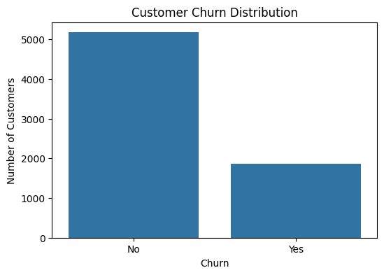
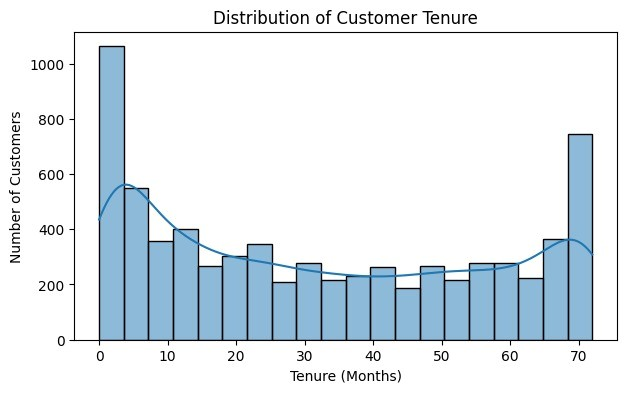
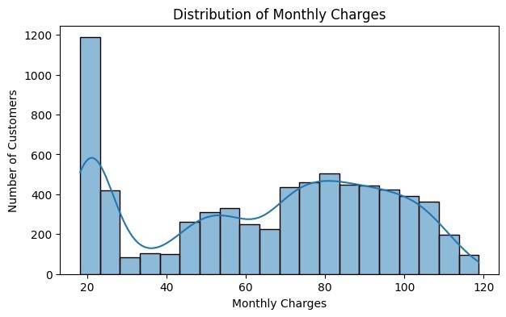
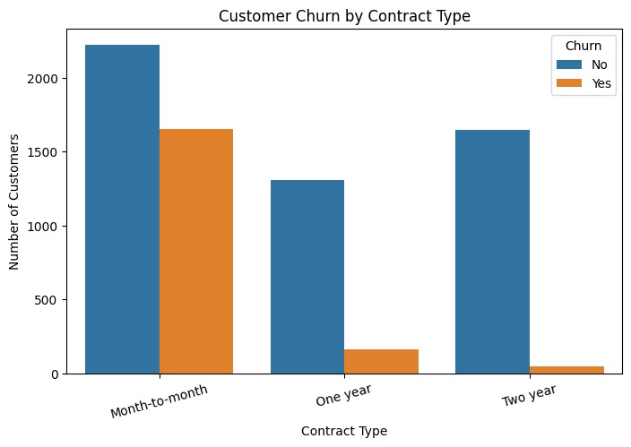

PHASE 01
Project Overview
Customer Churn Prediction is a supervised Machine Learning classification project that focuses on identifying customers who are likely to leave a telecommunications company.
The project uses historical customer information, including tenure, services, contract details, payment methods and monthly charges, to understand patterns associated with customer churn.
Logistic Regression, Decision Tree and Random Forest algorithms were trained and evaluated. A Soft Voting Classifier was also implemented by combining the three tuned models.
Project Type
Supervised Machine Learning
Task
Binary Classification
Dataset
Telco Customer Churn
Project Team
Riya, Kartik Arora, Harsh Sharma
Project Workflow
The project follows a structured machine learning pipeline, starting from raw customer data and ending with churn predictions.
Dataset Collection
Collected the Telco Customer Churn dataset containing 7,043 customer records and 21 original features.
Data Cleaning & Preprocessing
Converted TotalCharges into numeric format, handled 11 missing values using median imputation and checked duplicate records.
Exploratory Data Analysis
Studied churn distribution, customer tenure, monthly charges and churn patterns across contract types using visualizations.
Train-Test Split
Divided the dataset into training and testing sets using an 80:20 stratified split, resulting in 5,634 training and 1,409 testing records.
Feature Selection
Applied SelectKBest with mutual_info_classif to select the top 10 features from 30 encoded features.
Feature Scaling
Applied StandardScaler to the selected features. The scaler was fitted on training data and then used to transform testing data.
Model Training
Implemented Logistic Regression, Decision Tree and Random Forest classification algorithms.
Hyperparameter Tuning
Used GridSearchCV with 5-fold cross-validation and F1-score to identify suitable model parameters.
Ensemble & Model Evaluation
Built a Soft Voting Classifier and compared model performance using accuracy, precision, recall, F1-score and confusion matrices.
01.1
Problem Statement
Customer churn refers to the situation in which a customer stops using a company's products or services.
In the telecommunications industry, losing existing customers can lead to reduced revenue and increased customer acquisition costs.
Companies collect customer information such as demographics, service usage, contract details, payment methods, monthly charges and tenure.
Machine Learning can analyze this historical information to identify patterns associated with customers who have left the company.
Key Question
Can historical customer data help identify customers who are likely to discontinue their telecommunications services?
01.2
Project Objectives
Understand Customer Data
Analyze customer information and identify patterns related to churn.
Data Preprocessing
Clean and prepare the dataset for Machine Learning.
Exploratory Data Analysis
Investigate relationships between customer characteristics and churn.
Train Classification Models
Implement Logistic Regression, Decision Tree and Random Forest.
Evaluate Model Performance
Compare models using accuracy, precision, recall and F1-score.
Improve Model Performance
Apply cross-validation and hyperparameter tuning.
PHASE 02
Dataset Description
The project uses the Telco Customer Churn dataset, containing customer details, subscribed services, account information and churn status.
7,043
Total Records
21
Original Columns
2
Target Classes
Target Variable: Churn
Churn is the target variable used to determine whether a customer has left the service.
- No: Customer continues using the service.
- Yes: Customer has left the service.
Dataset Features
Customer Information: Gender, SeniorCitizen, Partner and Dependents.
Service Information: PhoneService, InternetService, OnlineSecurity, OnlineBackup, DeviceProtection, TechSupport, StreamingTV and StreamingMovies.
Account Information: Tenure, Contract, PaperlessBilling, PaymentMethod, MonthlyCharges and TotalCharges.
Target: Churn.
Churn Distribution
No Churn: 5,174 customers (73.46%)
Churn: 1,869 customers (26.54%)
The dataset contains more customers who continued using the service than customers who left.
PHASE 03
Data Cleaning and Preprocessing
The dataset was cleaned and transformed into a suitable format before model development.
Data Inspection
Examined dataset dimensions, column data types, missing values and duplicates.
Data Type Conversion
Converted TotalCharges from object type into numeric format.
Missing Value Handling
Identified 11 missing values after conversion and replaced them using the median (1397.475).
Duplicate Check
Checked for duplicate records. No duplicates were found.
One-Hot Encoding
Converted categorical variables into numerical features.
Train-Test Split
Used an 80:20 stratified split: 5,634 training records and 1,409 testing records.
Preprocessing Summary
After One-Hot Encoding, the dataset contained 30 features. The data was split into training and testing sets for model development.
PHASE 04
Exploratory Data Analysis
Exploratory Data Analysis (EDA) was performed to understand customer characteristics, examine data distributions and explore patterns related to churn.

Customer Churn Distribution
This graph shows the number of customers who continued using the service and those who left the company.
Observation: 5,174 customers did not churn, while 1,869 customers churned.

Distribution of Customer Tenure
This visualization examines how long customers have stayed with the telecommunications company.
Purpose: To understand the distribution of customer tenure in months.

Distribution of Monthly Charges
This graph explores the distribution of monthly charges paid by customers for their subscribed services.
Purpose: To understand the variation in monthly customer charges.

Customer Churn by Contract Type
This visualization compares customer churn across different contract types.
Purpose: To examine the relationship between contract type and customer churn.
PHASE 05
Feature Selection and Scaling
Feature selection was performed to identify useful input variables and reduce the number of features used for model training.
SelectKBest
The SelectKBest method with mutual_info_classif was used to select the top 10 features from the 30 encoded features.
Selected Features
- tenure
- MonthlyCharges
- TotalCharges
- InternetService_Fiber optic
- InternetService_No
- DeviceProtection_No internet service
- StreamingTV_No internet service
- StreamingMovies_No internet service
- Contract_Two year
- PaymentMethod_Electronic check
Feature Scaling
StandardScaler was applied to the selected 10 features. The scaler was fitted on the training data and then applied to the testing data.
PHASE 06
Model Development
Multiple classification models were trained to compare their performance in predicting customer churn.
Logistic Regression
A classification algorithm used to estimate the probability of a customer belonging to the churn or non-churn class.
Decision Tree
A tree-based model that makes predictions using feature-based decision rules.
Random Forest
An ensemble learning algorithm that combines multiple decision trees.
Hyperparameter Tuning
GridSearchCV with 5-fold cross-validation was used to tune model parameters.
Voting Classifier
A Soft Voting Classifier combined the three tuned models to generate predictions.
Model Evaluation
Evaluated model predictions using accuracy, precision, recall, F1-score and confusion matrices.
Confusion Matrices
Confusion matrices help us understand how correctly each model classified customers as Churn or No Churn. They show correct predictions as well as classification errors.
Logistic Regression
Test Dataset
| Actual / Predicted | No Churn | Churn |
|---|---|---|
| No Churn | 716 | 319 |
| Churn | 73 | 301 |
Decision Tree
Test Dataset
| Actual / Predicted | No Churn | Churn |
|---|---|---|
| No Churn | 736 | 299 |
| Churn | 70 | 304 |
Random Forest
Test Dataset
| Actual / Predicted | No Churn | Churn |
|---|---|---|
| No Churn | 724 | 311 |
| Churn | 73 | 301 |
Voting Classifier
Test Dataset
| Actual / Predicted | No Churn | Churn |
|---|---|---|
| No Churn | 713 | 322 |
| Churn | 65 | 309 |
Understanding the Confusion Matrix
True Negative (TN): Correctly predicted No Churn customers.
True Positive (TP): Correctly predicted Churn customers.
False Positive (FP): No Churn customers incorrectly predicted as Churn.
False Negative (FN): Churn customers incorrectly predicted as No Churn.
The Voting Classifier identified 309 actual churn customers and achieved the highest recall of 82.62% among the four models.
PHASE 07
Results and Evaluation
The trained models were compared on the test dataset using four classification metrics.
| Model | Accuracy | Precision | Recall | F1-score |
|---|---|---|---|---|
| Logistic Regression | 72.18% | 48.55% | 80.48% | 60.56% |
| Decision Tree | 73.81% | 50.41% | 81.28% | 62.23% |
| Random Forest | 72.75% | 49.18% | 80.48% | 61.05% |
| Voting Classifier | 72.53% | 48.97% | 82.62% | 61.49% |
Performance Highlights
73.81%
Highest Accuracy
Decision Tree62.23%
Highest F1-score
Decision Tree82.62%
Highest Recall
Voting ClassifierKey Findings
- Decision Tree achieved the highest accuracy and F1-score among the evaluated models.
- Voting Classifier achieved the highest recall, identifying the largest proportion of actual churn customers.
- All four models achieved recall above 80% on the test dataset.
- Precision was comparatively lower, indicating that some predicted churn cases were not actual churn cases.
Conclusion
The project demonstrates how machine learning can help identify customers who are likely to leave a telecommunications service. Decision Tree provided the best balance of accuracy and F1-score on the test dataset, while Voting Classifier achieved the highest recall.
Limitations and Future Scope
- Further feature engineering and experimentation may improve prediction performance.
- Additional customer data could help improve prediction quality.
- Future work can include deploying the model through a web application.
- Feature-importance analysis and business recommendations can be explored in future work.
Model Performance Comparison
Comparison of the four models based on Accuracy and F1-score.
Logistic Regression
72.18% AccuracyDecision Tree
73.81% AccuracyRandom Forest
72.75% AccuracyVoting Classifier
72.53% AccuracyKey Observations
- Decision Tree achieved the highest accuracy (73.81%) and F1-score (62.23%) among the four models.
- Voting Classifier achieved the highest recall (82.62%), making it the strongest model for identifying churn cases by recall.
- All four models showed comparable overall performance on the test dataset.
PROJECT TOOLS
Technologies Used
PROJECT RESOURCE
Explore the Complete Notebook
Explore the Python implementation, data preprocessing, exploratory data analysis, feature selection, model training and evaluation in Google Colab.